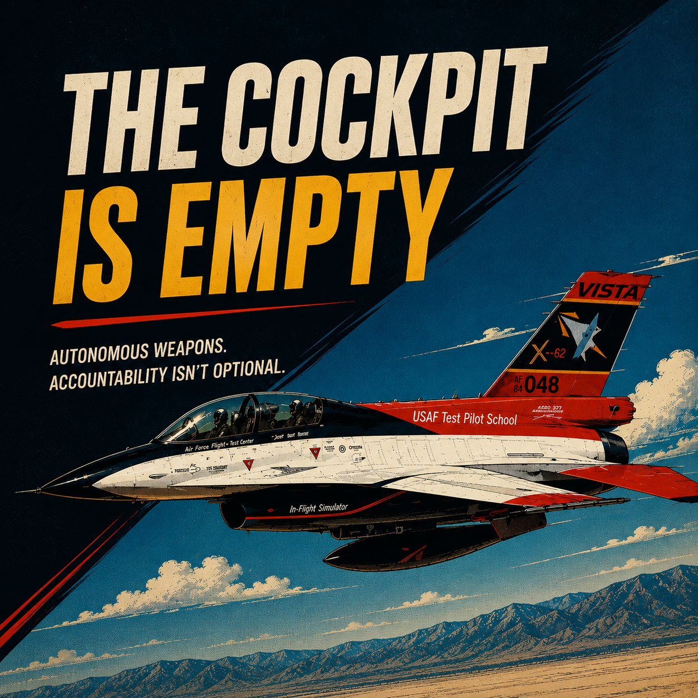
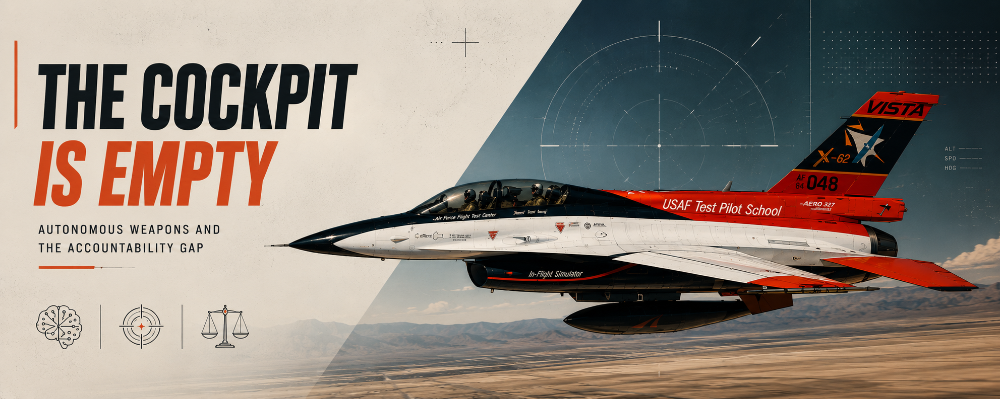

Who Is Responsible When an AI Kills?
Technical Writing (Individual — Spring 2026)
Defense & AI · Technical Communication
This article examines what happens when autonomous weapons make lethal decisions and no one is left to answer for them. Written for ENGR 3100 Technical Writing and published in magazine format as part of the course's public-audience deliverable, the piece spans aerospace engineering, machine learning, international humanitarian law, and geopolitics. My work on this project included:
- Technical Research: Synthesized primary sources across DARPA program reports, UN Panel of Experts findings, ICRC policy papers, and Human Rights Watch reports to build a technically grounded argument accessible to a broad engineering audience.
- The Accountability Gap: Analyzed how autonomous targeting decisions sever the chain of legal responsibility that international humanitarian law was built around, and why the black box nature of trained neural networks makes that gap structural rather than temporary.
- Case Studies: Examined the X-62A VISTA AI dogfight program (Edwards AFB, September 2023) and the Kargu-2 incident in Libya (2021) as concrete instances where autonomous capability outpaced governance.
- Geopolitical Analysis: Mapped the positions of the United States, China, and Russia across treaty negotiations, showing why the same nations most aggressively developing autonomous weapons are the ones blocking binding international law.
- Web Publication: Designed and built a full magazine-style web version of the article alongside the print deliverable, handling layout, typography, and visual hierarchy independently.
Article Scope & Key Parameters
>> Key Statistics
>> Article Structure
Technical Documentation
Themes
Outcome
Published as a full magazine-style article with an independent web version. Demonstrates technical communication, systems-level analysis, and the ability to reason about engineering beyond the equations alone.
Read Online

Signal Break
Magazine Web Version
Reflection
This project started from a question that felt engineering-adjacent: how does a flight control system decide what to do when no human is watching? It became harder to answer than expected. The engineering problem is solvable. The accountability one is not, at least not yet. Writing it out clarified something worth sitting with: building capable systems and building responsible ones are not the same goal, and the gap between them is growing faster than the institutions meant to close it.